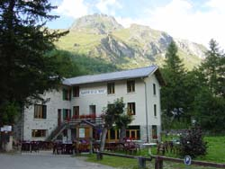

Auberge de la Nova (1650 m)

Département, commune : Savoie, commune de Bourg Saint Maurice
Carte : IGN Top25 3531 ET pli K1
Situation : les Chapieux, 73700 Bourg St Maurice. Téléphone : 04 79 89 07 15, e-mail lanova@wanadoo.fr
Propriétaire-Gardien : Anne-Marie Arpin et François Faussurier, 73700 Séez, téléphone/fax : 04 79 41 04 87
Ouverture et gardiennage : ouvert et gardé de fin mai à début novembre, fermé hors cette période (abri hivernal 10 places)
Commodités : 70 places (chambres de 2 à 4 p, dortoirs avec matelas, couvertures, oreiller ; sac à viande conseillé),
restauration, bar, vente de produits alimentaires de base et locaux dans le hameau, salle hors-sacs,
eau potable à l’intérieur et à 10 m.
Accès : en voiture (16 km de Bourg St Maurice, 35 km de Beaufort / Doron)
Itinéraires à proximité : TMB
Randonnées à partir du refuge :
guide ou site AsF© : Tête N des Fours, lac de Mya, l’Observatoire, Pointe de la Terrasse
autres randonnées : crête des Gittes